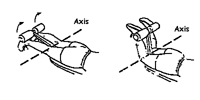
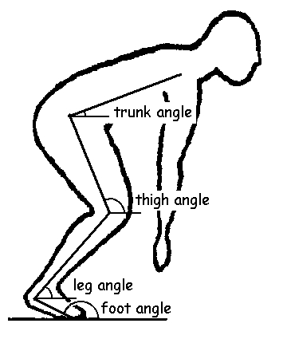
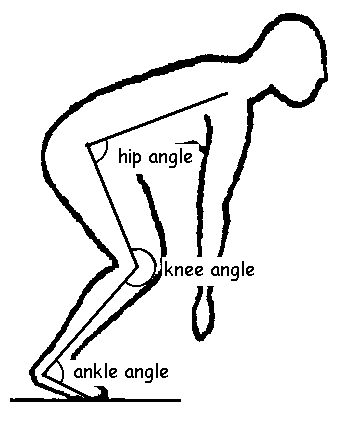
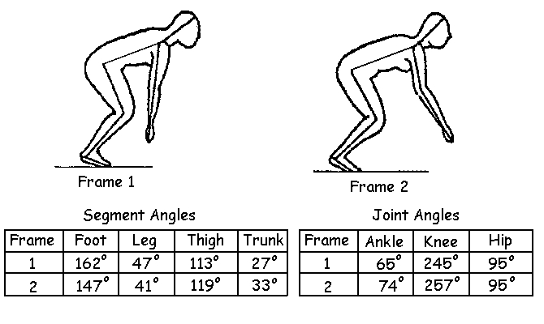
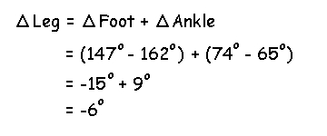
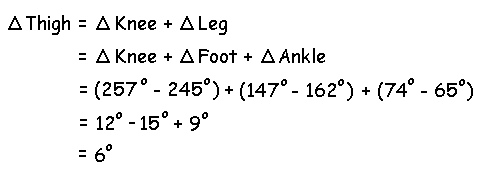

Angular Kinematics
Angular motion occurs when every part of the body travels along a circular path about a line in space or fixed axis such that all parts of the body travel through the same angle, in the same direction, and in the same time. This is also called rotation.

Our measurement of angular displacement can be either in degrees or radians and we determine the direction using the same right hand rule that we used for moments of force.
In biomechanics, two types of angles are particularly important:
1) Segment angle is the absolute angle of a body segment in space (usually measured relative to the horizontal or vertical axis.
2) Joint angle is the relative angle formed by two segments.

Segment Angles
The diagram to the right shows the segment angles of a person performing a horizontal jump. The angular displacement of the straight lines which define the segments were measured with respect to the horizontal axis.

Joint Angles
An example of joint angles is shown on the right. These were measured by the angular displacement between two adjacent segments. The ankle angle is the relative angle between the leg and the foot segments. The knee angle is the relative angle between the leg and the thigh segments.
We can examine how these angles change from one instant to the next (between frame 1 and frame 2) by measureing the segment and joint angles. These measurements are shown in the tables below.

Notice that the change in the leg angle is 6 degrees in the negative direction (41 - 47) which is equal to the sum of the change in the foot angle (147 - 162) and the change in the ankle angle (74 - 65).

If a coach recognizes that the leg has an incorrect angle, the cause could be due to either the foot or the ankle.
The change in the thigh angle is the sum of the change in the knee and leg angles. Since the leg angle is caused by the foot and the ankle, it is even more difficult to isolate the cause of an incorrect thigh angle than an incorrect leg angle. This is an important property of linked segment systems like the human body and one that biomechanists should be aware of.
